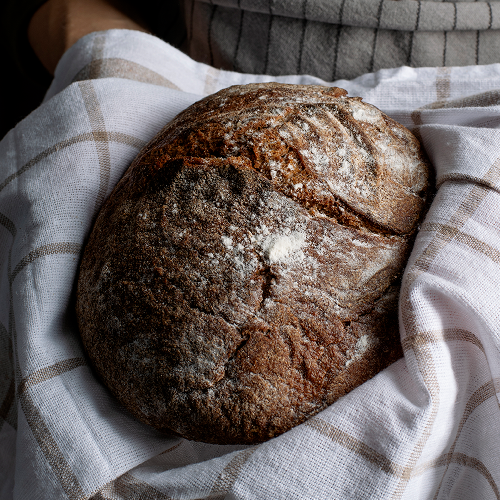

Our Breads and Pastries
Browse our sample bakery selection. Contact us to ask about availability or discuss a cake for a special occasion.
Find Your Next Favorite
Filter the sample menu and save the items you want to ask about.
Breads

- Rustic loaf: A crusty bread to serve with soups or sandwiches.
- Sandwich bread: A soft loaf for breakfast and lunch.
Pastries

- Croissants: A flaky option for a morning treat.
- Sweet pastries: A selection to share with family and friends.
Cakes and Special Requests
Use the contact form to describe your occasion, preferred pickup date, and any dietary questions. This demonstration site does not confirm orders or accept payments.